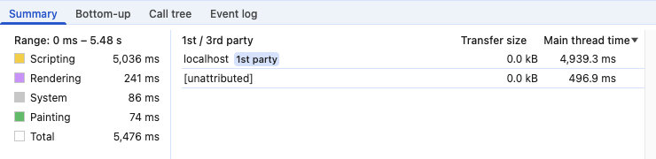
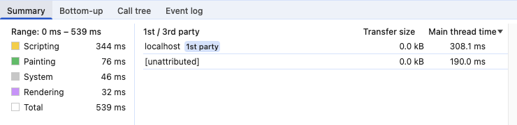

이노그리드 · NHN Injeinc
쿠버네티스 관리 플랫폼
SECloudit · DevOpsit — 클라우드 자원 관리와 애플리케이션의 빌드·배포를 지원하는 통합 플랫폼
프론트엔드 개발 · 그래프 시각화, 실시간 상태·로그, 공통 테스트 구조
전체는 가볍게, 선택한 대상은 자세하게
그래프의 노드를 눌러보세요. 선택한 노드는 기존 메뉴를 사용할 수 있는 DOM 요소로 바뀝니다.
노드를 클릭해 보세요
Canvas + DOMCanvas 96개DOM 0개
노드를 선택하면 이름·상태와 상세 메뉴를 확인할 수 있습니다.
예시 데이터로 핵심 동작을 재구성했습니다.
왜 전체를 DOM으로 유지하지 않았을까?
모든 리소스의 관계를 보는 순간에도 각 노드가 상세 메뉴를 가진 컴포넌트로 남아 있었습니다. 많은 정보를 보여주는 일과, 하나를 골라 조작하는 일을 나누었습니다.
배치 정보는 공유하고 노드 수와 줌 배율에 따라 Canvas와 DOM을 전환했습니다. Canvas에서 클릭한 노드를 좌표로 찾은 뒤 그 노드만 기존 React 컴포넌트로 표시했습니다. 최근 선택한 최대 12개만 DOM으로 유지해 다시 요소가 쌓이지 않도록 했습니다.
전체 관계를 한눈에 보여주면서도, 선택한 노드의 기존 메뉴를 유지하는 것이 핵심이었습니다.
구현 과정과 성능 비교 기록 ↗실제 작업의 Performance 비교 보기
합성 리소스 250개의 같은 줌 동작을 비교했을 때, Scripting 합계가 5,036ms에서 344ms로 줄었습니다. 위 체험 화면의 측정값이 아니라 블로그에 정리한 비교 기록입니다.
DOM 경로

Canvas 경로
